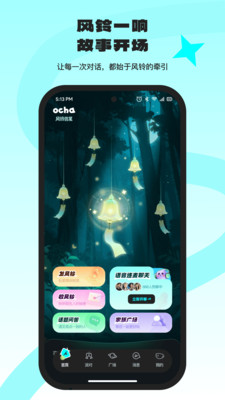

Ocha 到底值不值得掏时间？一个社恐的轻社交账本
不聊情怀聊账本：Ocha 把社交从"必须说话"改成"可以挂着等回应"，对社恐来说这节省的不是几分钟，是一整段"硬撑社交"的心理能耗。免费门槛够低，但它到底能替你挡掉多少无效社交？算一算就清楚。
先抛问题：它到底值不值得掏钱——或者说，值不值得你花时间？
去Ocha官网看了一圈，应用商店里的Ocha界面上没有 VIP 入口，没有订阅弹窗，甚至连"解锁更多功能"的按钮都找不着。到今天为止，它是完全免费的。那为什么还要写"付费决策账本"？
因为真正的成本不是钱，是你本来想用来刷剧、看书、发呆的那两个小时。对一个社恐来说，在传统社交 App 上硬撑半小时的心理能耗，可能比付一个月会员费还贵。Ocha 的聪明之处在于，它把"是否参与"的选择权完整还给了你——你不想说话？挂个风铃就走，没人会追问你为什么不回复。
这笔账，得从"节省了什么"而不是"多了什么功能"来算。

定价拆解：免费版到底给了什么
Ocha 目前的状态很坦率——没有付费层级，没有 Pro，没有买断。但如果你愿意把"时间"当成货币来换算，它其实在给你一套非常完整的"轻社交时间套餐"：
- 风铃信笺：无限次挂，字数不限（虽然建议别写太长），完全匿名。传统社交 App 上发一条朋友圈要顾虑谁会看到、会不会显得矫情——Ocha 上你挂一句"今天加班到九点，想找个人说说话"，挂完就可以关 App 干别的，有人回应你再回来。
- 问答区：浏览和回答都没限制，靠观点共鸣而不是头像或地理位置匹配。这意味着你不需要包装自己的形象，只需要输出真实想法。
- 家族群组：按兴趣主题分类加入，进群门槛极低（大部分群申请即通过），退群也没有"好友关系破裂"的心理负担。
- 语音派对：可以只听不说，开麦是可选的，甚至连头像都可以用默认的——你可以是一个"只有声音没有脸"的听众。
说穿了，Ocha 免费给你的东西，是一个"不会追问你为什么沉默"的社交环境。这个价值很难用钱衡量，但可以用你在其他 App 上花掉的那些"被迫回应"的时间来对标。
算账：三类人各领一张账单
轻度用户：偶尔想找人说两句但不想暴露自己
如果你一个月想起来刷两三次社交 App，主要是想挂几句话没人回应也无所谓，那 Ocha 对你来说 100% 免费够用。
换算成时间账：你在微信上发一条"今天好烦"要考虑分组可见、要回复朋友的关心、要在心里演练到底说多少真话——这个心理准备可能花掉你 30 分钟。想试试的话从官方下载拿安装包，手机号注册三步就能进。在 Ocha 上，打开 App、写信笺、挂出去，3 分钟搞定，之后你可以关掉 App 该干嘛干嘛。剩下的 27 分钟，就是它帮你省的。
这类人：零成本，闭眼用。
主力用户：每天或隔几天想逛一圈，偶尔想找人聊点深的
如果你把 Ocha 当成一个稳定的"轻社交出口"——每天花 10~20 分钟逛广场、看看问答、偶尔去家族群组插两句话——那 Ocha 对你来说 依然免费，但需要你花"筛选内容"的注意力成本。
Ocha文档里有选群的小技巧，比如主题越具体越好，但我自己的经验是先围观几天判断氛围——家族群组里有好群也有水群，需要你先看看群友聊的内容对不对味；问答区的问题质量也参差不齐，有时候翻五六条才找到一条值得认真答的。但这跟传统社交 App 上"刷信息流刷到不知道自己在干嘛"的时间黑洞比起来，Ocha 的算法逻辑更倾向于"让你主动选择"而不是"让你被动刷下去"。
换算成时间账：每天 15 分钟逛 Ocha，是一个"有明确上限"的社交行为——逛完广场、看完感兴趣的群组，你自然会觉得"够了"然后关掉。而在抖音或小红书上，15 分钟可能变成 1 小时。这个"主动截止"的能力，值了。
这类人：零现金成本 + 少量筛选成本，建议用一周试试，找到对味的群就留下。
重度用户：想把它当成主要社交阵地，想建立稳定关系
这一类我要直接泼冷水——Ocha 目前做不到，免费也做不到。
它的产品设计从骨子里就不是为"高频互动、强关系建立"准备的：风铃信笺的回应是异步的，可能几小时也可能几天；语音派对主打"只听不说"，没有一对一私聊功能；家族群组里的成员流动性比微信公众号还大，今天还在聊的群明天可能就冷了。
如果你想找的是"高频聊天的好朋友"或者"能发展成现实关系的同好"，Ocha 会让你失望。这不是付费能解决的问题——就算它加了会员也不会加这些功能，因为加了就等于把自己变成另一个微信或 Discord，直接丢掉了"社恐友好"这个核心定位。
这类人：别在它身上花时间，直接去用传统社交 App。
替代方案：不花这份时间还有什么别的路
你可能会说："我不用 Ocha，直接不社交不就行了？"
这话听起来对，但实际上大部分人做不到——"完全不社交"和"主动选择低压力社交"是两件事。前者会让你慢慢变成孤岛，后者让你保持与世界的弱连接但不被迫营业。
真正的替代方案只有两个：
用同类免费工具降低压力：比如一些主打匿名问答或树洞功能的社区。问题是，那些社区要么太窄（只有问答没有群组和语音），要么已经被广告和营销号占领。Ocha 的优势在于功能完整且相对干净——有"主动选择"的空间，而不是被动刷信息流。
主动降低社交频率，接受一定的"社交饥饿"：这其实是个好选项。如果你的社交需求真的很低，关掉所有社交 App 半年，你会发现世界不会因此停转。但对大多数人来说，完全切断社交的代价是"与现实脱节"——朋友聊什么热点你不知道，有机会你也接不住。Ocha 提供的是一个"保持弱连接但不深交"的中间地带。
结论：哪类人闭眼用，哪类人再等等，哪类人永远别碰
最后给一个可执行的三秒对号入座：
- 闭眼用：社恐 / 不想被迫社交 / 兴趣导向轻度用户——打开 App、挂个风铃、逛一圈家族群组，整个过程没有任何人要求你"必须做什么"。它不花钱，但省下来的心理能耗比花钱买会员还值。
- 再等等：重度社交需求者 / 想建立稳定关系的人——Ocha 目前不会加这些功能，因为加了就丢了自己。等它真的改定位了你再回来也不迟。
- 永远别碰：已经有稳定社交圈、不需要弱连接出口的人——你的时间用在别的地方更有价值。
说穿了，Ocha 的账本本质上是一道选择题：你是愿意花时间"硬撑社交"，还是愿意花时间"主动选择低压力连接"？ 它没有给你新的社交方式，只是把选择权还给了你。
关于这套资料的备份，我在GitHub、Gitee和GitCode三个仓库各放了一份——GitHub 为主流生态，国内访问慢的时候可以直接走 Gitee 或 GitCode 的镜像。